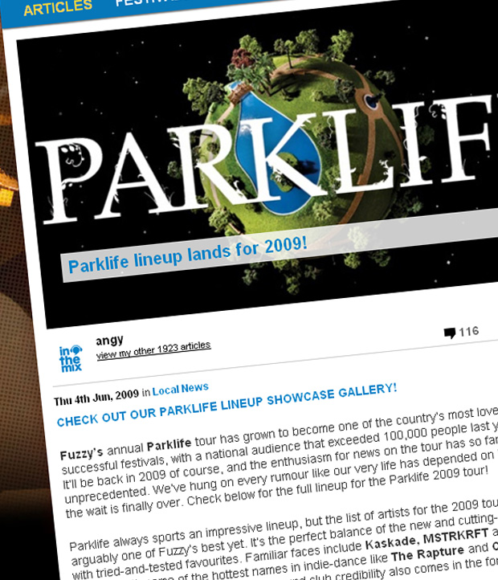

Parklife lineup lands for 2009!
{kind=link}

Fuzzy’s annual Parklife tour has grown to become one of the country’s most loved and successful festivals, with a national audience that exceeded 100,000 people last year. It’ll be back in 2009 of course, and the enthusiasm for news on the tour has so far been unprecedented. We’ve hung on every rumour like our very life has depended on it. Well, the wait is finally over. Check below for the full lineup for the Parklife 2009 tour! Parklife always sports an impressive lineup, but the list of artists for the 2009 tour is arguably one of Fuzzy’s best yet. It’s the perfect balance of the new and cutting-edge with tried-and-tested favourites. Familiar faces include Kaskade, MSTRKRFT
and Busy P, along with some of the hottest names in indie-dance like The Rapture and Crystal Castles. A healthy serving of underground club credibility also comes in the form of acts like Aeroplane, AutoKratz and Claude VonStroke.
Even better, a significant number of acts on the lineup will be touring Australia for the very first time, including our own critically acclaimed Empire of the Sun, Erol Alkan, Junior Boys, La Roux and Little Boots. Check below for the full list of artists we’ll be enjoying this September and October!
Parklife 2009 lineup, in alphabetical order:
Aeroplane
Art vs Science
The Aston Shuffle
A-Trak
AutoKratz – First Australian Tour!
Beni
Bertie Blackman
Busy P (DJ & host)
Claude VonStroke
The Cool Kids
Crystal Castles
Empire of the Sun – First Australian Tour!
Erol Alkan – First Australian Tour!
The Glimmers
Junior Boys – First Australian Tour!
Kaskade
La Roux – First Australian Tour!
Lady Sovereign
Little Boots – First Australian Tour!
Metric – First Australian Tour!
Metronomy
MSTRKRFT
The Rapture
Tiga
Shazam
inthemix is a proud presenting partner of Parklife in 2009! Keep your eyes peeled to our Festival Page at inthemix.com.au/parklife and check out the national tour dates below…
Sat 26th Sep – Botanic Gardens & Riverstage, Brisbane
Sun 27th Sep – Wellington Square, Perth
Sat 3rd Oct – Birrarung Marr, Melbourne
Sun 4th Oct – Kippax Lake, Moore Park, Sydney
Mon 5th Oct – Botanic Park, Adelaide
Tickets on sale to Fuzzy Members on Thursday 18th June, and the general public at midday on Thursday 25th June.